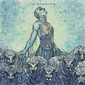

Music
Library
Welcome To Music Store
Download latest music Albums, Singles, Mixtapes from here
Home
Singles
Albums
Contact
Latest Songs
Kingdom Come
Jon Bellion
Jim Morrison
Jon Bellion
The Hills
The Weeknd
Dark Times (Feat. Ed Sheeran)
The Weeknd
King Kunta
Kendrick Lamar
i
Kendrick Lamar
Get Ugly
Jason Derulo
The Separation
Jon Bellion

Download
Eyes To The Sky
Jon Bellion
Jim Morrison
Jon Bellion
Halloween
Jon Bellion
2 Rocking Chairs
Jon Bellion
Ungrateful Eyes
Jon Bellion
One More Time
Jon Bellion
To My Future Wife...
Jon Bellion
A Dedicated Instrumental
Jon Bellion
When The Lions Come (Feat. Castro, Logic, Blaque Keyz)
Jon Bellion
NewYorkSoul 1
Jon Bellion
Superman, The Gi (Feat. And The Curse)
Jon Bellion
Kingdom Come
Jon Bellion